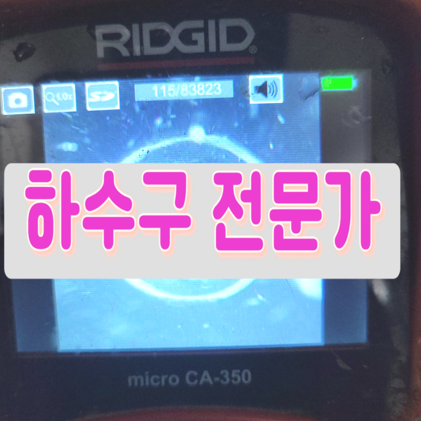
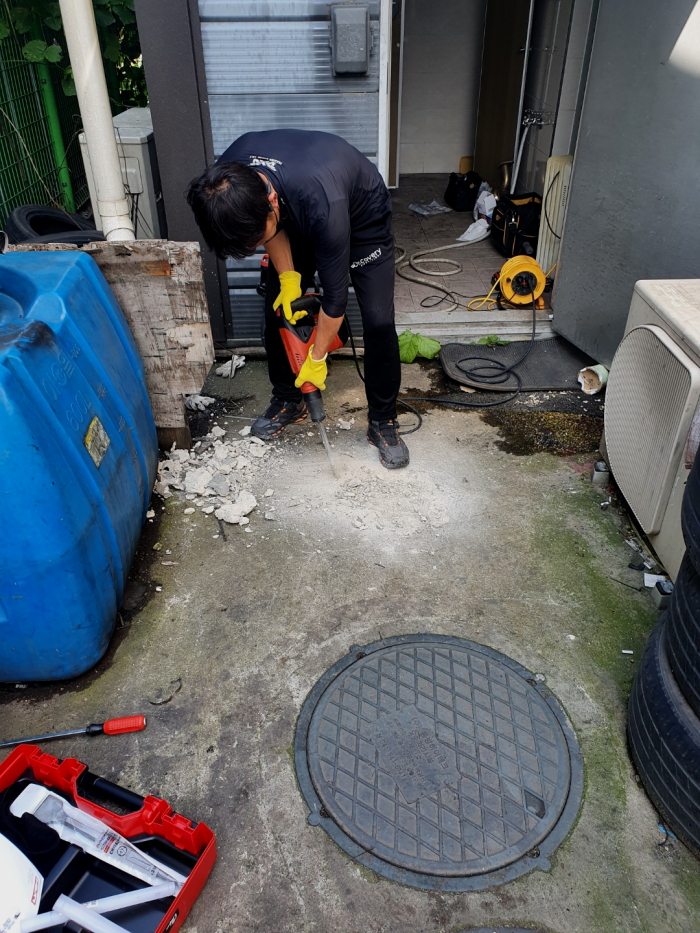
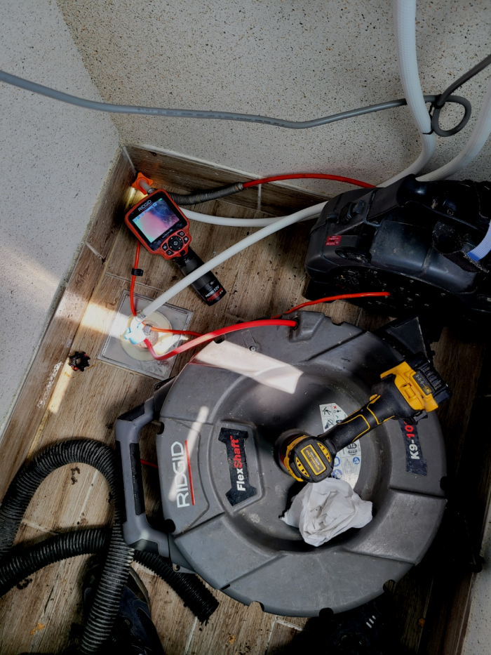
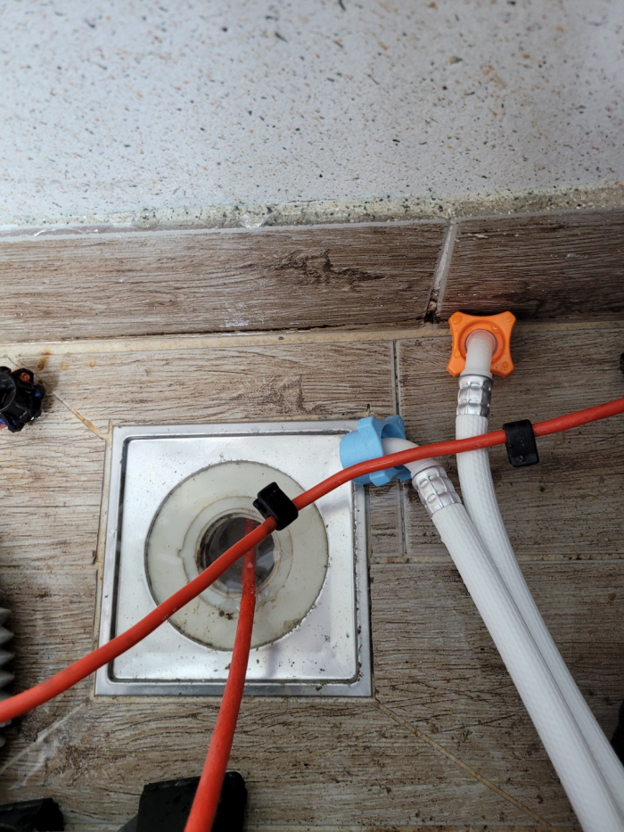
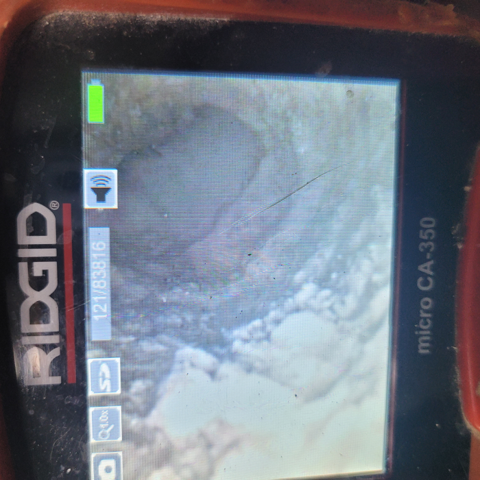
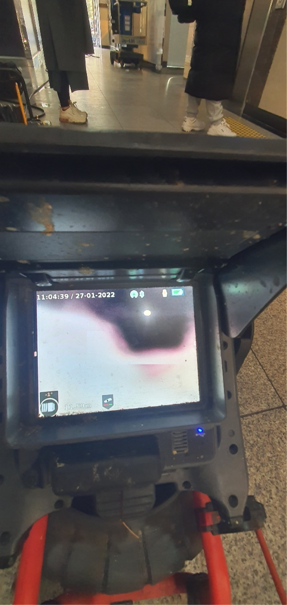
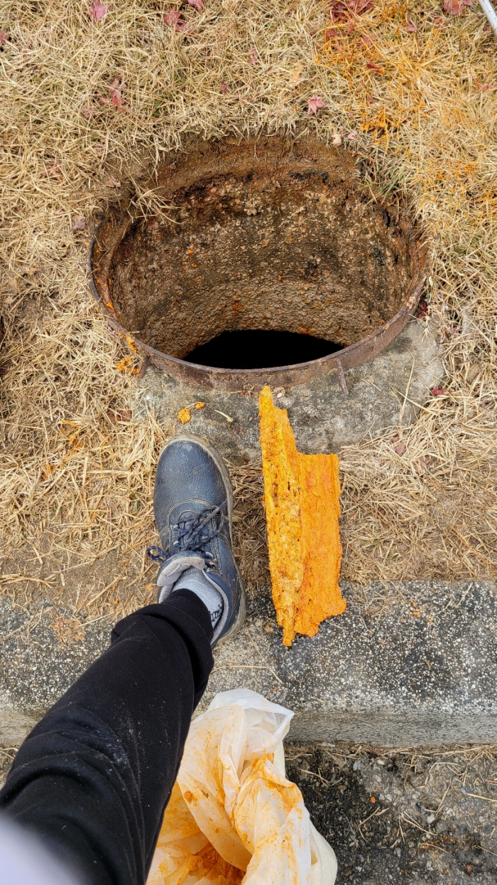

🏠 동두천 소요동 배수관막힘 상패동 배수구역류 배관뚫는곳 설비업체
동두천 싱크대막힘 전문 시공 후기

📋 작업 개요
- 위치: 동두천
- 서비스 유형: 싱크대막힘, 변기막힘, 하수구막힘, 배관막힘, 누수수리, 역류해결, 뚫는업체, 배관청소
- 작업 일시: 2024. 2. 9. 16:16
- 업체명: 하수구수사대 (010-5615-2118)
🔍 문제 상황
안녕하십니까^^
설비전문업체 "하수구수사대"를 찾아주셔서 감사드려요^^
퇴수구는 주방, 욕실 등 우리들의 편리한 생활을 위해 꼭 필요한 설비물입니다. 특히 주방 씽크대퇴수구의 경우엔 음식 조리부터 설거지까지 하루에도 수십번 씩 사용하게 되는데요. 사용 빈도가 높을 만큼 문제가 생길 확률도 클 수밖에 없습니다.
아무래도 전문가를 불러야 하는 것 같기에 신속하게 출장이 되는 주변 전문업체에 전화해서 퇴수구 뚫는 작업을 요청하셨답니다.

🔎 원인 분석
💡 전문가 진단: 동두천 소요동 배수관막힘 상패동 배수구역류 배관뚫는곳 설비업체
동두천 소요동 배수관막힘 상패동 배수구역류 배관뚫는곳 설비업체
배수관막힘의 원인을 해결하기 위한 단계로는 먼저 배관 내부에 쌓여있는 이물질들을 제거하기 위해서 청소작업을 진행하게 되었는데요. 저희는 많은 장비를 보유하고 있기 때문에 배관 내부의 상황에 맞는 장비를 이용해서 작업을 하게 됩니다.
배출구의 상태나 구조에 따라서도 추가 비용이 발생될 수 있는 것인데요. 이는 바로 작업량이 늘어나기 때문입니다. 가정이 아닌 카페나 음식점 등과 같은 업체에서의 하수구 막힘 비용은 보통에서 조금 더 나간다고 생각해 주시면 되는데요.
보통은 이물질 혹은 음식물로 하수막히지만 이번에 다녀온 현장처럼 다른 이유로 막혀서 해결해야 할 수도 있습니다. 물론 하수뚫음을 해결할 때 간편하게 하면 좋겠지만 어렵다고 해도 오랜 경험으로 꼼꼼하게 해드리고 있습니다. 그게 바로 저희를 멀리서도 찾으시는 이유이기도 합니다.

🔧 작업 과정
또한 하수관배관 내시경 카메라를 가끔씩 이용하여 안을 쳐다보며 일했기 때문에 보다 깔끔하게 기름 찌꺼기와 더불어 이물질이 붙어있는 부분 쪽에 집중적으로 작업 진행이 가능했는데요. 하수관막힘 사진으로 드러난 것과 같이 작업 앞뒤의 모습 자체가 하나도 틀리지 않고 변모된 걸 느낄 수 있습니다.
배수관막힘을 해결하기 위해 내시경으로 보니 배관 내부가 말끔해진 모습이 확인이 되었는데요. 어떤 배수관 업체에서는 다녀가면 물만 내려가는 정도로 뚫기도 해서 얼마 지나지 않아 다시 막히게 되는 경우가 있습니다. 하지만 저희는 기름 슬러지를 제대로 제거해서 오랫동안 시원하게 막힘없이 해결을 해드리고 있습니다.
퇴수배관 스케일링 후에는 내시경 검사를 다시 한번 시행하여 제대로 청소되었는지 확인하였습니다. 고객님은 사라진 악취에 안도하셨는데요. 이렇듯 물이 잘 빠지지 않고 냄새가 나는 경우라면 배관 스케일링을 해야 합니다. 저희는 이물질의 종류, 생성 정도, 배관 구조 등에 따라 방법을 달리하여 빠르게 제거합니다.
여러 요인이 더해져 쌓이면서 결국 배수가 막히게 되죠. 외부에서 이물질이 들어와 있는 상태에서 가정, 상가 배수에서 오물이 들어오면 둘이 섞이면서 배수가 막히는 결과가 나타나게 됩니다.
이렇기때문에상담하실때 위급한목소리로 도움을청하기도하는데요.그저놔두기만하면 증상이완화될까요? 그러시지는 않겠지만 이용하지않고 냅두셔도배수 안에머물러있는 음식물쓰레기가 내뿜는냄새는 설명하기가 어려울정도에요
내부에 있는 관을 청소하고 나면 외부로 통하는 배출구도 살펴보는 것이 좋은데요. 비록 한 가지 문제만 겉으로 드러났지만 다른 배출구배관에도 문제가 있을 가능성이 다분하기 때문입니다. 종종 믿고 불렀던 전문 업체에서 꼼꼼하게 배출구배관 전체를 살펴봐 주지 않아서 다른 문제가 연이어 발생하는 일이 흔하다고 하죠.
배관에관한 대부분을 처리하고있어서 막힌것만 해결하는것이아닌 설비쪽대부분을 문제를없애드리고있어요.안막혔는데 하수도안에서 고약한냄새가 날때도있습니다.원인이다다르기에 정확하게찾기위해서 금방출장가서 전체를살펴보고난후 악취를해결하고있답니다


✅ 작업 완료
얼마 전에 갔던 원룸 건물도 싱크대 퇴수 문제가 생겼지만 지나치셨다가 누수까지 발생하여 바닥재에 영향을 끼치고 밑에 집에도 피해가 가버린 곳이었습니다. 이런 사례도 있기에 내려벼 두시기보다는 별것 아닌 것 같아도 전문 기사와 이야기해 보시는 것이 올바르다고 말씀드립니다.
#하수구막힘 #하수구뚫음 #하수구역류 #씽크대막힘 #싱크대역류 #오수관막힘 #하수구청소 #욕실하수구막힘 #변기막힘 #하수구뚫는비용 #싱크대수리 #화장실막힘




⚠️ 베란다 누수 및 방수 관리 방법
- ✅ 비가 많이 올 때 창틀 주변이나 아래층 천장에 얼룩이 생기는지 정기적으로 확인해 보세요.
- ✅ 우수관 주변 실리콘 마감이 들뜨거나 깨진 틈새가 있는지 손상 여부를 수시로 체크하세요.
- ✅ 베란다 바닥 타일의 줄눈(메지)이 소실되면 그 틈으로 물이 침투하여 누수가 유발됩니다.
- ✅ 누수 의심 증상 발견 시 방치하면 아래층 손실이 커지므로 즉시 전문가의 진단을 받으십시오.
💡 핵심 정리
- 확실한 장비 작업(내시경 점검 및 샤프트 스케일링)으로 원인을 뿌리 뽑습니다.
- 작업 후 1년 이내에 동일한 부위 재발 시 100% 무상 A/S 서비스를 보장합니다.
- 서울 · 경기 · 인천 전 지역에 24시간 언제든 긴급 출동할 수 있도록 항시 대기 중입니다.
❓ 자주 묻는 질문 (FAQ)
🚨 동두천 싱크대막힘 문제로 고민이신가요?
정확한 원인 진단과 확실한 시공으로 재발 없는 해결을 약속드립니다.
24시간 긴급 출동 | 서울 · 경기 · 인천 전지역 | 1년 내 재발 시 무상 A/S